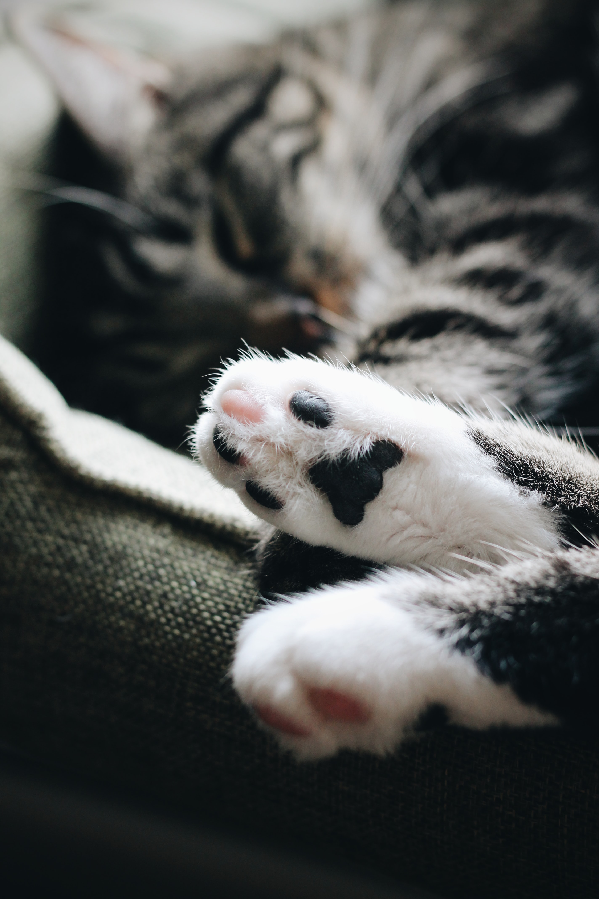

Подушечки кошачьей лапки
Мягкие и нежные. Бытует мнение, что депрессия лечится не только таблетками. Это подтвердили 76% участников опроса, проведенного исследовательским центром Mental Health Foundation.
Мягкие и нежные. Бытует мнение, что депрессия лечится не только таблетками. Это подтвердили 76% участников опроса, проведенного исследовательским центром Mental Health Foundation.
Знакомьтесь: кот Ларри, занимает должность главного мышелова на Даунинг-стрит, 10, в резиденции премьер-министра Великобритании с 2011 года.
В 1234 году папа римский Григорий IX объявил войну кошкам. Спойлер: ничего из этого хорошего не вышло.
Фелинологи объясняют желание котов спать на человеке поиском тепла. Однако замечено, что если кошка постоянно укладывается на одну и ту же часть тела, то следует обратить на это внимание.
Грызуны «общаются» между собой, посредством звуковых сигналов в диапазоне около 40 кГц. А в таких «разговорах» коты отлично разбираются. Эта сверхспособность помогает им узнавать, когда мыши выйдут из нор.